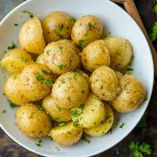

Crispy Baked Potatoes

Short description of Cripsy Baked Potatoes
A Classic side dish that's easy to make and always a crowd-pleaser. These crispy baked potatoes are perfect for any meal.
Ingredients
- 2 Large Potatoes
- 1 tablespoon olive oil
- Salt and pepper to taste